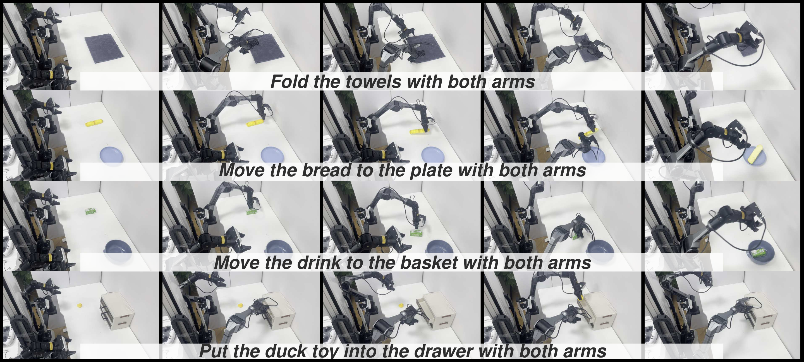
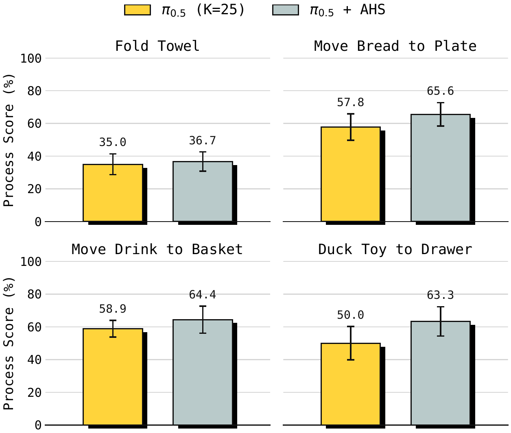
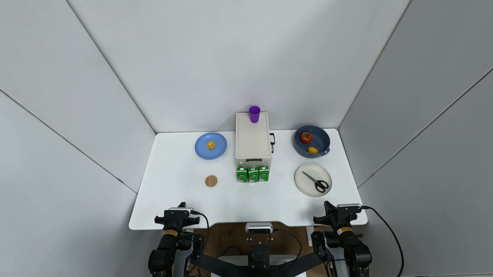
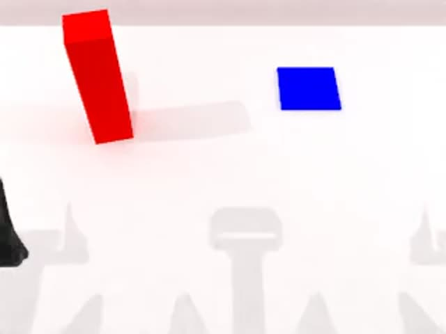
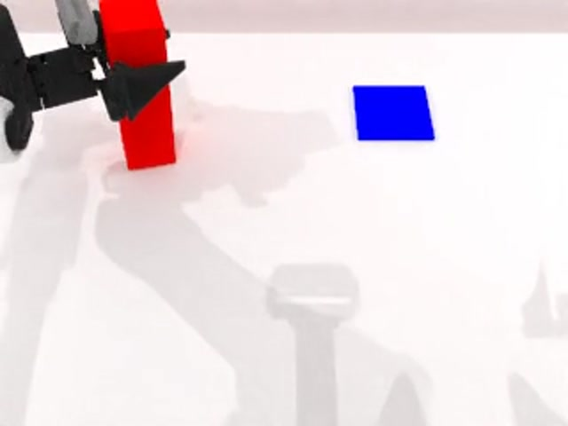
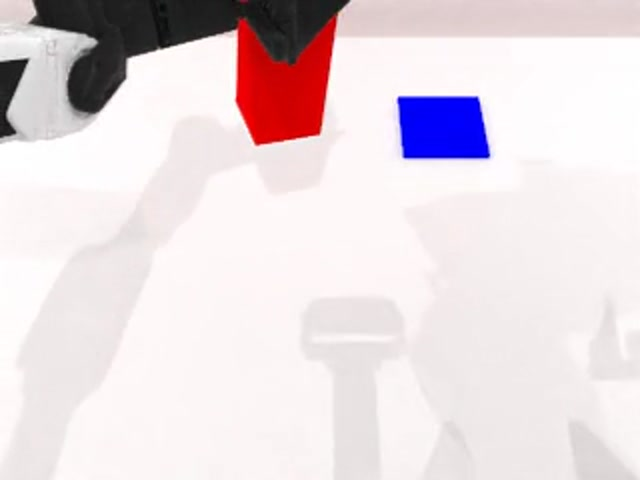
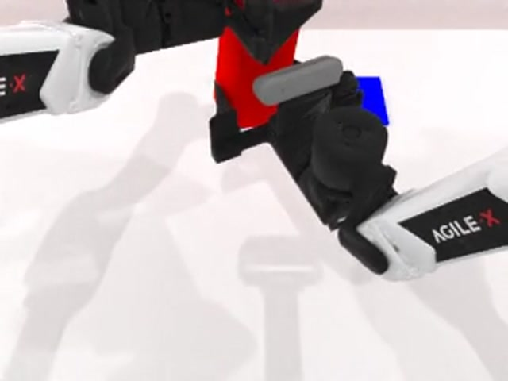
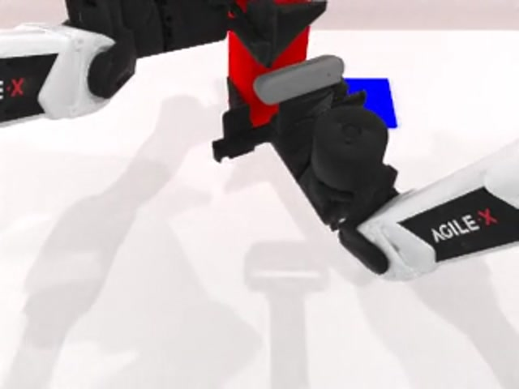
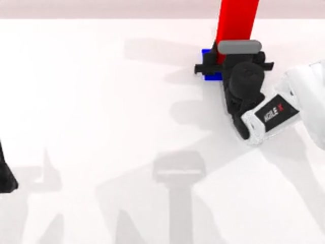
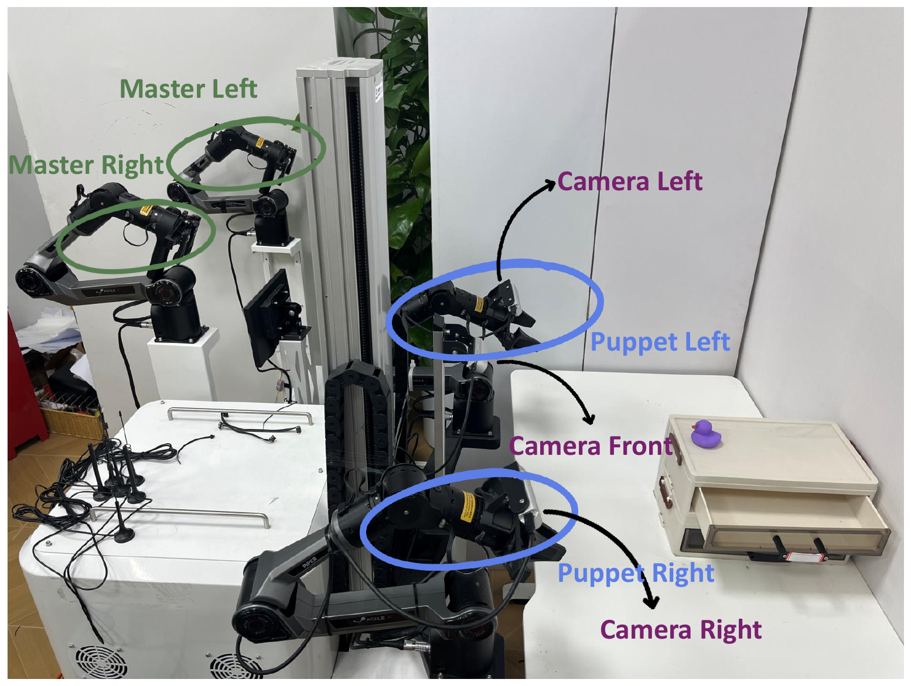

Autonomous 1x
ChunkTrust
Adapting Execution Horizons for Robot Policies
with Action-Expert Evidence
Learning when to observe again, from the policy’s own action predictions.
Core Idea
Optimal horizon of replanning is phase dependent
ChunkTrust adapts the number of actions committed from each chunk using action-expert evidence, shortening execution when feedback is needed and extending it when the predicted prefix is stable.
Success rate: 29.6% → 39.1%
Base → AHS+QHA · Easy + Hard
Success rate: 47.8% → 57.5%
Base → AHS · 24 tasks
Process score: 50.4% → 57.5%
Fixed → AHS
Action-Expert Evidence
Two complementary signals decide how far to execute.
Spectral stability
Measure changes in each prefix’s velocity spectrum during generation.
Motion continuity
Measure speed variation across recent actions and the predicted prefix.
Phase-aware memory
Accumulate horizon evidence while discounting earlier task phases.
Evidence & Outcomes
Higher instability is associated with failure.
Across 1,600 fixed-horizon π0 rollouts, failed episodes show higher median scores for both signals. Failure reaches 97.4% when both risks are high.
Method
AHS scores candidate horizons online. QHA amortizes the preference.
ChunkTrust evaluates how far each predicted action chunk should be trusted before replanning. The training-free Action-aware Horizon Selector scores candidate prefixes from intra-chunk spectral stability and inter-chunk continuity, then tracks phase-dependent reliability with an online posterior. The Query-based Horizon Adapter distills these preferences into a lightweight horizon prior that can be fused with fresh online evidence at deployment time.

Results
Adaptive execution across simulation benchmarks.
Success rates (%). Highlighted columns show AHS and AHS+QHA. Gains are absolute differences in success rate, computed before rounding.
Table 1 · AHS performance across simulation benchmarks.
| Policy | Task scope | Train recipe | Base | +AHS | Δ vs. Base |
|---|---|---|---|---|---|
| RoboTwin2.0 · Easy + Hard | |||||
| π0.5 | 50 tasks | multitask post-training | 56.70 | 63.50 | +6.80 |
| π0 | 8 tasks | task-specific post-training | 18.19 | 21.38 | +3.19 |
| π0.5 | 8 tasks | task-specific post-training | 29.63 | 36.25 | +6.63 |
| Fast-WAM | 8 tasks | multitask post-training | 86.81 | 88.13 | +1.31 |
| RoboCasa GR1 Tabletop | |||||
| π0.5 | 24 tasks | multitask post-training | 40.08 | 42.50 | +2.42 |
| GR00T N1.5 | 24 tasks | zero-shot | 43.25 | 44.92 | +1.67 |
| GR00T N1.6 | 24 tasks | zero-shot | 47.61 | 51.42 | +3.80 |
| Qwen3GR00T | 24 tasks | multitask post-training | 47.83 | 57.50 | +9.67 |
Table 2 · QHA augmentation and transfer on RoboTwin2.0.
A. QHA training-task evaluation
| Task | π0 | π0.5 | ||||||||||
|---|---|---|---|---|---|---|---|---|---|---|---|---|
| Base | AHS | AHS+QHA | Base | AHS | AHS+QHA | |||||||
| Easy | Hard | Easy | Hard | Easy | Hard | Easy | Hard | Easy | Hard | Easy | Hard | |
| Blocks Ranking RGB | 19.00 | 0.00 | 28.00 | 1.00 | 31.00 | 5.00 | 36.00 | 20.00 | 48.00 | 29.00 | 56.00 | 33.00 |
| Handover Block | 41.00 | 10.00 | 41.00 | 5.00 | 64.00 | 9.00 | 44.00 | 14.00 | 44.00 | 14.00 | 32.00 | 10.00 |
| Handover Mic | 100.00 | 2.00 | 100.00 | 24.00 | 100.00 | 30.00 | 98.00 | 64.00 | 100.00 | 56.00 | 98.00 | 59.00 |
| Hanging Mug | 17.00 | 3.00 | 14.00 | 9.00 | 23.00 | 10.00 | 14.00 | 8.00 | 13.00 | 12.00 | 13.00 | 14.00 |
| Place A2B Left | 24.00 | 1.00 | 34.00 | 0.00 | 39.00 | 1.00 | 41.00 | 4.00 | 47.00 | 4.00 | 47.00 | 15.00 |
| Place Bread Basket | 11.00 | 8.00 | 18.00 | 16.00 | 15.00 | 10.00 | 30.00 | 17.00 | 50.00 | 29.00 | 55.00 | 41.00 |
| Place Bread Skillet | 15.00 | 2.00 | 23.00 | 5.00 | 23.00 | 2.00 | 24.00 | 10.00 | 36.00 | 19.00 | 44.00 | 19.00 |
| Place Can Basket | 33.00 | 5.00 | 22.00 | 2.00 | 33.00 | 3.00 | 35.00 | 15.00 | 50.00 | 29.00 | 55.00 | 34.00 |
| Mean by setting | 32.50 | 3.88 | 35.00 | 7.75 | 41.00 | 8.75 | 40.25 | 19.00 | 48.50 | 24.00 | 50.00 | 28.13 |
| Overall | 18.19 | 21.38 | 24.88 | 29.63 | 36.25 | 39.06 | ||||||
B. QHA transfer to held-out tasks (π0.5)
| Task | Base | AHS | AHS+QHA | Δ vs. AHS |
|---|---|---|---|---|
| Blocks Ranking RGB | 28.00 | 38.50 | 43.50 | +5.00 |
| Place Bread Basket | 23.50 | 41.50 | 42.00 | +0.50 |
| Overall | 25.75 | 40.00 | 42.75 | +2.75 |
Real Robot
AgileX COBOT Magic rollouts under clean and randomized settings.
We use pi0.5 as the policy, trained on clean real-robot demonstrations.



More Randomized
Autonomous 1x
Duck to Drawer
Open the drawer, pick up the duck, place it inside, and close the drawer. Changing layouts and nearby objects require coordinated grasping and placement.
Loading rollout…
Select a rollout to explore its stages and horizon choices.
12 rolloutsCase Study
Adaptive horizons follow manipulation phases.
AHS selects shorter horizons around grasping and transport corrections, then commits longer prefixes once motion becomes stable after contact.
Task prompt: use the left arm to grasp the red block on the table, handover it to the right arm and place it on the blue pad






Phase 1
Step 0
The policy prepares to grasp the red block with the left arm
Selected horizon
K=41
0
309

Implementation
Drop-in horizon selection for existing evaluation loops.
AHS runs as an evaluation-time wrapper around existing policy rollouts. It observes the policy's action trace and recent execution history, scores candidate prefixes, and returns the next horizon without changing the policy weights.
Citation
BibTeX
@misc{chunktrust2026,
title = {{ChunkTrust}: Adapting Execution Horizons for Robot Policies with Action-Expert Evidence},
author = {Huang, Fanding and
Jiang, Jingyan and
Bao, Shifeng and
Pu, Mingkang and
Li, Shiwei and
Xu, Jing and
Xu, Shijia and
Huang, Guanbo and
Gu, Chenghao and
Huang, Yuzhi and
Li, Chenxin and
Khan, Faisal Nadeem and
Yang, Huan and
Wang, Yan and
Chi, Cheng and
Wang, Zhi},
year = {2026},
eprint = {2609.39754},
archivePrefix = {arXiv},
primaryClass = {cs.RO},
url = {https://arxiv.org/abs/2609.39754}
}